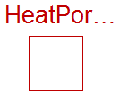
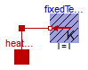

Extends from Modelica.Icons.InterfacesPackage (Icon for packages containing interfaces).
| Name | Description |
|---|---|
| Thermal port for 1-dim. heat transfer | |
| Thermal port for 1-dim. heat transfer (filled rectangular icon) | |
| Thermal port for 1-dim. heat transfer (unfilled rectangular icon) | |
| Partial heat transfer element with two HeatPort connectors that does not store energy | |
| PartialElementaryConditionalHeatPort | Partial model to include a conditional HeatPort in order to dissipate losses, used for textual modeling, i.e., for elementary models |
| PartialElementaryConditionalHeatPortWithoutT | Partial model to include a conditional HeatPort in order to dissipate losses, used for textual modeling, i.e., for elementary models |
| PartialConditionalHeatPort | Partial model to include a conditional HeatPort in order to dissipate losses, used for graphical modeling, i.e., for bulding modelsby drag-and-drop |
| Type | Name | Description |
|---|---|---|
| Temperature | T | Port temperature [K] |
| flow HeatFlowRate | Q_flow | Heat flow rate (positive if flowing from outside into the component) [W] |
partial connector HeatPort "Thermal port for 1-dim. heat transfer"
Modelica.SIunits.Temperature T "Port temperature";
flow Modelica.SIunits.HeatFlowRate Q_flow
"Heat flow rate (positive if flowing from outside into the component)";
end HeatPort;
This connector is used for 1-dimensional heat flow between components. The variables in the connector are:
T Temperature in [Kelvin]. Q_flow Heat flow rate in [Watt].
According to the Modelica sign convention, a positive heat flow rate Q_flow is considered to flow into a component. This convention has to be used whenever this connector is used in a model class.
Note, that the two connector classes HeatPort_a and HeatPort_b are identical with the only exception of the different icon layout.
Extends from HeatPort (Thermal port for 1-dim. heat transfer).
| Type | Name | Description |
|---|---|---|
| Temperature | T | Port temperature [K] |
| flow HeatFlowRate | Q_flow | Heat flow rate (positive if flowing from outside into the component) [W] |
connector HeatPort_a "Thermal port for 1-dim. heat transfer (filled rectangular icon)" extends HeatPort;end HeatPort_a;
 Modelica.Thermal.HeatTransfer.Interfaces.HeatPort_b
Modelica.Thermal.HeatTransfer.Interfaces.HeatPort_b
This connector is used for 1-dimensional heat flow between components. The variables in the connector are:
T Temperature in [Kelvin]. Q_flow Heat flow rate in [Watt].
According to the Modelica sign convention, a positive heat flow rate Q_flow is considered to flow into a component. This convention has to be used whenever this connector is used in a model class.
Note, that the two connector classes HeatPort_a and HeatPort_b are identical with the only exception of the different icon layout.
Extends from HeatPort (Thermal port for 1-dim. heat transfer).
| Type | Name | Description |
|---|---|---|
| Temperature | T | Port temperature [K] |
| flow HeatFlowRate | Q_flow | Heat flow rate (positive if flowing from outside into the component) [W] |
connector HeatPort_b "Thermal port for 1-dim. heat transfer (unfilled rectangular icon)" extends HeatPort;end HeatPort_b;
 Modelica.Thermal.HeatTransfer.Interfaces.Element1D
Modelica.Thermal.HeatTransfer.Interfaces.Element1D
This partial model contains the basic connectors and variables to allow heat transfer models to be created that do not store energy, This model defines and includes equations for the temperature drop across the element, dT, and the heat flow rate through the element from port_a to port_b, Q_flow.
By extending this model, it is possible to write simple constitutive equations for many types of heat transfer components.
| Type | Name | Description |
|---|---|---|
| HeatPort_a | port_a | |
| HeatPort_b | port_b |
partial model Element1D "Partial heat transfer element with two HeatPort connectors that does not store energy" Modelica.SIunits.HeatFlowRate Q_flow "Heat flow rate from port_a -> port_b"; Modelica.SIunits.TemperatureDifference dT "port_a.T - port_b.T";public HeatPort_a port_a; HeatPort_b port_b; equation dT = port_a.T - port_b.T; port_a.Q_flow = Q_flow; port_b.Q_flow = -Q_flow;end Element1D;
 Modelica.Thermal.HeatTransfer.Interfaces.PartialElementaryConditionalHeatPort
Modelica.Thermal.HeatTransfer.Interfaces.PartialElementaryConditionalHeatPort

This partial model provides a conditional heat port for dissipating losses.
If this model is used, the loss power has to be provided by an equation in the model which inherits from PartialElementaryConditionalHeatPort model (lossPower = ...). The device temperature TheatPort can be used to describe the influence of the device temperature on the model behaviour.
| Type | Name | Default | Description |
|---|---|---|---|
| Boolean | useHeatPort | false | =true, if heatPort is enabled |
| Temperature | T | 293.15 | Fixed device temperature if useHeatPort = false [K] |
| Type | Name | Description |
|---|---|---|
| HeatPort_a | heatPort | Optional port to which dissipated losses are transported in form of heat |
partial model PartialElementaryConditionalHeatPort
"Partial model to include a conditional HeatPort in order to dissipate losses, used for textual modeling, i.e., for elementary models"
parameter Boolean useHeatPort = false "=true, if heatPort is enabled";
parameter Modelica.SIunits.Temperature T=293.15
"Fixed device temperature if useHeatPort = false";
Modelica.Thermal.HeatTransfer.Interfaces.HeatPort_a heatPort(
final T=TheatPort,
final Q_flow=-lossPower) if useHeatPort
"Optional port to which dissipated losses are transported in form of heat";
Modelica.SIunits.Power lossPower
"Loss power leaving component via heatPort (> 0, if heat is flowing out of component)";
Modelica.SIunits.Temperature TheatPort "Temperature of heatPort";
equation
if not useHeatPort then
TheatPort = T;
end if;
end PartialElementaryConditionalHeatPort;
Modelica.Thermal.HeatTransfer.Interfaces.PartialElementaryConditionalHeatPortWithoutT
This partial model provides a conditional heat port for dissipating losses.
If this model is used, the loss power has to be provided by an equation in the model which inherits from PartialElementaryConditionalHeatPort model (lossPower = ...). The device temperature TheatPort can be used to describe the influence of the device temperature on the model behaviour.
| Type | Name | Default | Description |
|---|---|---|---|
| Boolean | useHeatPort | false | =true, if heatPort is enabled |
| Type | Name | Description |
|---|---|---|
| HeatPort_a | heatPort | Optional port to which dissipated losses are transported in form of heat |
partial model PartialElementaryConditionalHeatPortWithoutT "Partial model to include a conditional HeatPort in order to dissipate losses, used for textual modeling, i.e., for elementary models" parameter Boolean useHeatPort = false "=true, if heatPort is enabled";Modelica.Thermal.HeatTransfer.Interfaces.HeatPort_a heatPort( final Q_flow=-lossPower) if useHeatPort "Optional port to which dissipated losses are transported in form of heat"; Modelica.SIunits.Power lossPower "Loss power leaving component via heatPort (> 0, if heat is flowing out of component)";end PartialElementaryConditionalHeatPortWithoutT;
Modelica.Thermal.HeatTransfer.Interfaces.PartialConditionalHeatPort
This partial model provides a conditional heat port for dissipating losses.
If this model is used, the internalHeatPort has to be connected in the model which inherits from PartialElementaryConditionalHeatPort model. The device temperature internalHeatPort.T can be used to describe the influence of the device temperature on the model behaviour.
| Type | Name | Default | Description |
|---|---|---|---|
| Boolean | useHeatPort | false | =true, if HeatPort is enabled |
| Temperature | T | 293.15 | Fixed device temperature if useHeatPort = false [K] |
| Type | Name | Description |
|---|---|---|
| HeatPort_a | heatPort | Optional port to which dissipated losses are transported in form of heat |
partial model PartialConditionalHeatPort
"Partial model to include a conditional HeatPort in order to dissipate losses, used for graphical modeling, i.e., for bulding modelsby drag-and-drop"
parameter Boolean useHeatPort = false "=true, if HeatPort is enabled";
parameter Modelica.SIunits.Temperature T=293.15
"Fixed device temperature if useHeatPort = false";
Modelica.Thermal.HeatTransfer.Interfaces.HeatPort_a heatPort if useHeatPort
"Optional port to which dissipated losses are transported in form of heat";
Modelica.Thermal.HeatTransfer.Sources.FixedTemperature fixedTemperature(final T=T) if not useHeatPort;
protected
HeatPort_a internalHeatPort;
equation
connect(heatPort, internalHeatPort);
connect(fixedTemperature.port, internalHeatPort);
end PartialConditionalHeatPort;